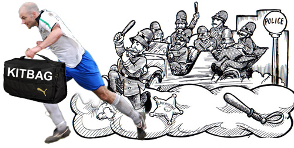

|
Hachioji Park, Sunday 25th January
Celts started their Sunday evening with a bit of a scare when midfield maestro Henry decided to leave the kit bag outside the Citibank building in Roppongi while he popped upstairs to withdraw his match subs & pocket money for the night. On his return he found numerous police officers had surrounded the bag, cordoned off the immediate vicinity and were calling in the bomb squad to destroy the bag in a controlled explosion. Having negotiated his way out of the situation by basically picking up the bag and scarpering down the road with Tokyo’s finest in pursuit (cue the Benny Hill music), he managed to find his way to the rest of the lads and we made our way to the game.

Having started 2009 with 11 goals in two games (almost half of our total goal tally in 2007/08 season) Celts were optimistic about facing the unpredictable Lions who have had a mixed bag of results including 3 points off BFC & a share of the spoils with Hibs, not bad credentials for a team in their first season in Division 1.
Celts had a tremendous response to the call for this game which gave the Celts management a headache (the kind most TML managers wouldn’t really mind) of witling the squad down from 22 available to the bare 16 for the game. The Celts missing Yuki, Jonesy, Damo, Seamus, Chris and Leg end (typo Ed.) Sam & with Gavin failing a last minute pre-match fitness test, lined up with Aki, Wayne, Tomo, Rick, Will, Peter, Derm, Toru, Henry, Jo & Oli, with a formidable bench with Ben, Masa, Take, Toru & Vince.
Lions kicked off the game & within 90 seconds Celts had their first free kick 30-35 yards out on the edge of the Lions box. Peter stepped up to send a curling free kick around the wall and down to the bottom left hand corner, Orlando the Lion(s) keeper managed to get himself across the goal and down to the corner push the ball out and prevent a certain goal, however to his dismay it was the Celts that we’re first to respond to the 2nd ball and a simple tap in for Toru from 5 yards out secured the first goal.
On 20 minutes Celts scored their second after good defensive work from Wayne found Jo on the halfway line, as the defenders closed in Jo released the ball to the on rushing Peter who got to the edge of the box before unleashing a lob over the Orlando and into the back of the goal.
Celts made it 3-0 nine minutes later when Oli’s cheeky little floater from a free kick on the right hand edge of the Lions box, found Peter unmarked at the far post to power in a header past the advancing Orlando.
The first half closed at 3-0 with Celts having majority of possession and with the defensive quartet of Will, Tomo, Rick & Wayne magnificently marshalling the Lions to a few long distance shots that were all close but no problem for Aki.
Celts kicked off the 2nd half with Masa replacing Wayne at the right-full, Ben at centre-half for Tomo & Vince for Jo. All credit to the Lions who came out in the 2nd half with guns blazing or whatever other metaphor would be appropriate for a Lion, however with Dermot playing a solid holding midfield role it was hard for the Lions to make anything of the little possession they had. Celts we constantly hitting the Lions on the break and on one occasion managed to get the ball into the back of the net after good work from Masa, Peter, Derm, Jo & Oli on the right wing and a cross to the far post found Take for a simple tap in only to be ruled off side, a dubious call as adjudged from the Celts bench.
Half way into the 2nd half, a Lions foray into the Celts box and after a bout of pinball football in the box, ball to arm and a penalty, not much complaint as it was hard to see, various opinions on the side lines from both benches however no one really saw it except the players involved and the referee (his first & only mention in this report otherwise I’ll probably be banned from the TML). Omar stepped up to smack the ball past the out stretched arms of Aki and pull one back for the Lions.
At 3-1 the game turned into Celts playing possession football and counter attacking the Lions on the break. A late challenge on Jo ended up with the Celts influential striker being carried off with a twisted ankle and will probably see him sidelined for the next 6-8 weeks, a huge loss to the team.
With the clock running down, Oli found himself at the half way line picking up a Celts defensive clearance , turning his defender he ran down the to the corner and then demonstrated some silky footwork avoiding the oncoming defenders, managing to get the ball out of the corner a quick interplay with Vince, Will and Derm before unleashing a rocket of a shot from outside of the box into the top left hand corner of the goal 4-1 and with that quality finish came the final whistle.
Credit to Lions a young and upcoming team with a lot of potential for the future in the TML Division 1, a well played game in good spirits. No complaints on the final result.
A tremendous Celts team effort today, Aki although not too much to do was solid the few occasions he was called on, the defense Will, Wayne, Masa, Tomo, Rick & Ben were solid and consistent throughout, the middle of the park with Peter, Derm, Toru, Henry & Take were tireless in pursuit of the ball, providing a supply line for the strikers and additional support to the defense & the Celts strike force of Jo, Oli & Vince all played their parts in creating opportunities, bringing the Celts midfield into the game and harassing the Lions back Line & with the injured Gav on the sidelines making the strategic & tactical changes it was a perfect evening. Celts men of the match were Dermot for his tireless work in holding the midfield and Peter for his constant supply of crosses and opportunities from the right wing, plus his two goals.
Report by Sam Yusef
|